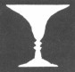

|
BuddhaSasana Home Page |
Vietnamese, with Unicode Times font |
Tìm
hiểu Trung Luận
Nhận Thức Luận Phật Giáo
Hồng Dương Nguyễn Văn Hai
Phật lịch 2544
|
1.7 Biện chứng pháp apoha Cá thể đặc thù và tổng thể khái quát. Trên phương diện luận lý học, trong các câu "Ðây là cái bàn", "Ðó là màu xanh", các danh từ 'cái bàn', 'màu xanh', không phải để chỉ vào cá thể đặc thù, mà là tên gọi những phẩm tính do biến kế chấp tạo và gán ghép cho cá thể đặc thù. Cá thể đặc thù là thực tại điểm vô ngôn không có danh xưng nên phải dùng đại danh từ 'đây', 'đó' để chỉ vào. Trần Na (Dignàga), một môn đệ của Thế Thân (Vasubandhu), chủ trương chỉ có hai thứ đối tượng lượng biết. Một là cá thể đặc thù thực hữu gọi là tự tướng (svalaksana; particular) và hai là tổng thể khái quát không thật gọi là tổng tướng (sàmànyalaksana; universal). Sự phân biệt bản thể của sự vật như vậy dùng làm nền tảng cho một thứ nhận thức luận chỉ chấp nhận hai hình thái lượng biết, hiện lượng (pratyaksa; perception) và tỷ lượng (anumàna; inference). Hiện lượng trực tiếp nhận thức tự tướng bằng cảm giác đơn thuần; tỷ lượng gián tiếp nhận thức tổng tướng bằng suy luận. Tự tướng là thực tại điểm, nên không có thể chất nhưng lại có lực tính (forces), nghĩa là có khả năng tính tác dụng trên thức để phát sinh tri giác và suy luận. Tổng tướng là hiện tượng nhất thể không sai biệt, hoàn toàn vọng tưởng, không có thật tính như tự tướng, nghĩa là không có khả năng tính tác dụng. Tuy nhiên tổng tướng không huyễn ảo như hoa đốm giữa trời hay mộng mị như trong giấc mơ. Các thuyết khác nhau về tổng tướng thường được ví như những cách giải thích khác nhau về sự hiện hữu và nhận thức một chiếc áo. Theo phái Chính luận (Nyàya), chiếc áo có ba đơn vị: chỉ dệt, phẩm tính áo, và tính hòa hiệp tự nhiên (inherence) của tính áo trong các chỉ dệt. Cả ba đơn vị ấy đều thật có, hiện hữu riêng biệt, và mắt có thể nhìn thấy. Phái Thắng luận (Vaisesika) chủ trương rằng tính hòa hiệp tự nhiên không thể thấy được mà phải do suy luận mới biết được. Các phái Kỳ Na (Jaina) và Số luận (Sankhya) không chấp nhận tính hòa hiệp tự nhiên. Ðối với các luận sư Phật giáo như Trần Na và Thiên Chủ, chỉ có một thực tại điểm duy nhất là tự tướng của chiếc áo, và do tác dụng của điểm này mà biến kế chấp vọng tạo ra hình ảnh chiếc áo. Thuyết tổng tướng này được gọi là thuyết tương hợp (sàrùpya-vàda; theory of Conformity) có công dụng kết nối hai sự vật dị loại là thực tại với vọng tưởng. Trạng thái có hay không và thật hay giả của tổng tướng là một vấn đề rất quan trọng được triết gia Ấn độ cũng như Tây phương đem ra bàn cãi từ mấy thế kỷ nay. Ngoài phương pháp nhận thức luận, đại khái còn có hai đường hướng kiến giải khác. Một là đứng trên phương diện bản thể luận tìm xem tổng tướng có thực hữu hay không. Hai là đứng trên quan điểm triết lý ngôn ngữ tìm xem ý nghĩa của những từ tổng quát [tức là những từ có ý nghĩa khái quát như 'cây', 'khói', 'lửa', những từ dùng làm danh xưng cho chủng loại như 'con bò', 'cái bàn', .. , cho phẩm tính như 'trắng', 'dài', .. , v..v..] liên hệ như thế nào với trạng thái của tổng tướng. Phái Nyàya và phái Mìmàmsà, hai trong sáu tông phái chính thống của Bà la môn giáo, chủ trương tổng tướng thực hữu và cần tổng tướng phải thật có thời mới giải thích được ý nghĩa của những từ tổng quát. Ngược lại, theo Trần Na tổng tướng không thật, nghĩa là không có khả năng tính tác dụng. Nhưng vì cho rằng tổng tướng là đối tượng của tỷ lượng, một phương cách lượng biết được công nhận, nên Trần Na chấp nhận sự hữu của tổng tướng. Trần Na lập ra thuyết apoha [apoha có nghĩa là khiển trừ; exclusion, elimination, negation, repudiation], sau này được môn đệ là Thiên Chủ (Dharmakìrti) hoàn chỉnh, với mục đích chứng minh rằng dẫu tổng tướng không thật, các từ tổng quát vẫn có ý nghĩa như thường. Bản thể luận liên hệ chặt chẽ với vấn đề có hay không có tổng tướng. Thông thường người ta dễ chấp nhận cho rằng những vật thể đặc thù, như 'cái bình', 'TiVi', ... đều thật có. Nhưng khi nói đến chủng loại như 'người', 'cây', .. hay đến phẩm tính như 'tròn', 'trắng', .. thời ngay cả trong trường hợp chấp nhận những sự thể ấy hiện hữu đi nữa chúng cũng vẫn có tính cách trừu tượng và tổng quát. Chúng được gọi là tổng tướng. Ðối với những người thuộc phái thực tại luận (Realism) tổng tướng là thật có. Ngược lại hai phái duy danh luận (Nominalism) và quan niệm luận (Conceptualism) chủ trương tổng tướng có mà không thật bởi vì tổng tướng là do phân biệt vọng tưởng. Về phía bản thể luận tổng tướng có thể xem như là thuộc tính của cá thể đặc thù. Về phía triết lý ngôn ngữ tổng tướng được gọi tên bằng những ngôn từ có nghĩa tổng quát. Vấn đề tổng tướng. Thế nào là vấn đề tổng tướng? Hầu hết mọi người đều tưởng rằng thế gian này gồm không phải những cá thể biệt lập biến đổi liên lĩ mà là những vật thể tự tồn cùng chia xẻ với nhau một số tính chất cọng hữu. Thí dụ ta nhìn vào một đóa hoa và nhận xét nó có màu sắc tương tợ như màu của một lá cờ đỏ bên cạnh. Màu của đóa hoa có đồng nhất với màu của lá cờ hay không? Hai vật thể ấy có chia xẻ một cái gì cọng hữu hay không? Câu trả lời đầu là cả hai đều có màu đỏ. Ðến khi trả lời câu hỏi tính 'đỏ' có phải là tính cọng hữu của hai vật thể ấy hay không thời phái thực tại luận có ý kiến khác với hai phái đối nghịch là duy danh luận và quan niệm luận. Theo thực tại luận, đóa hoa và lá cờ chia xẻ chung ít ra là một tính chất. Tính chất cọng hữu 'đỏ' là một tổng tướng thật có. Nó hoàn toàn tự nhiên, không quan hệ với tâm thức con người. Hai phái kia không chấp nhận điều này, chủ trương rằng tính chất cọng hữu chỉ là thành quả của sự tương giao tác dụng giữa thực tại với tâm thức. Ðể hiểu rõ thêm tầm quan trọng của sự liên hệ giữa tổng tướng và phương cách ta tương giao tác dụng với ngoại giới, hãy đặt câu hỏi "Làm sao biết được màu của đóa hoa và lá cờ là đỏ?" Hình như đó là một câu hỏi vớ vẩn. Tình cờ ta thấy lá cờ đỏ, đóa hoa đỏ và nhận biết ngay chúng có màu đỏ thời đó chỉ là do quen thuộc tự nhiên mà biết. Thường ta tin chắc lắm điều mà ta cho là hiển nhiên ngay nơi sự vật. Sự thật không phải vậy. Biết một sự vật không phải là biết được chính tự thân sự vật, mà chỉ là biết sự vật qua tác dụng hay thuộc tính của nó. Muốn biết được lá cờ có một hình thể và màu sắc nào đó hay tác dụng theo một cách nào đó ta cần phải có sẵn một khái niệm khá phức tạp về cờ nói chung. Nếu ta đủ khả năng nhận xét về một sự thể là vì ta đã sẵn có khái niệm về sự thể ấy trong đầu óc. Tưởng cũng nên nói đến tính cách khác nhau giữa phái duy danh luận và phái quan niệm luận, là hai phái đối nghịch với phái cực đoan thực tại luận. Tuy cả hai phái đều cùng một chủ trương là tổng tướng không thật, nhưng mỗi phái giải thích theo một cách tính tổng quát hay tính cọng hữu. Phái duy danh cực đoan hơn cho rằng tính ấy không thực hữu, và hoàn toàn do sử dụng các từ tổng quát mà có. Trong thí dụ nêu trên, tính cọng hữu 'đỏ' không ở trong đóa hoa, cũng không ở trong lá cờ. Sở dĩ có cái 'đỏ' chung là tại vì từ tổng quát 'đỏ' được ứng dụng vào trường hợp này. Lẽ tất nhiên có màu đỏ trong đóa hoa cũng như trong lá cờ. Nhưng màu đỏ của đóa hoa tương tợ giống màu đỏ lá cờ, chứ không phải một màu đỏ đồng nhất. Phái quan niệm luận giữ lập trường biện chứng, không thiên cực đoan như hai phái kia. Phái này chủ trương sự ứng dụng ngôn từ tổng quát phải qua trung gian khái niệm. Theo Thiên Chủ, khái niệm là giả thiết một tổng tướng chung cho một số sự vật phát xuất từ kinh nghiệm thấy biết các sự vật ấy và từ tập quán sử dụng ngôn ngữ công ước để mô tả và phát biểu những kinh nghiệm ấy. Trạng thái có mà không thật của tổng tướng. Vì khái niệm quan hệ với kinh nghiệm nhận thức cho nên vấn đề hiểu biết trạng thái tổng tướng trở nên cần thiết cho sự giải thích làm sao ta có thể biết được những khái niệm như 'người' hay 'màu tím' chẳng hạn có quan hệ với tâm thức hay không. Như vậy vấn đề trạng thái tổng tướng là một trong những con đường chính yếu đi tìm hiểu ngoại giới, tìm hiểu phương cách nhận thức và những chuẩn tắc cần thiết để phân loại khái niệm về thế giới này. Ta dựa trên ba quan điểm để xét trạng thái tổng tướng: bản thể luận, triết lý ngôn ngữ, và nhận thức luận. Trên quan điểm bản thể luận, vấn đề tổng tướng được đặt ra như thế này. Cái gì là trạng thái thực hữu của các sự thể có tính tổng quát? Nếu tính cọng hữu nói trong thí dụ ở đoạn trên là thật có, thời bản chất của tính cọng hữu ấy là gì? Các nhà thực tại luận chủ trương rằng các sự thể như phẩm tính và chủng loại chẳng hạn, đều có tính chất tổng quát và thực hữu. Ngoại giới chẳng những không thu hẹp lại thành tập hợp các cá thể đặc thù mà còn chứa những phẩm tính cọng hữu nữa. Phía đối nghịch chủ trương ngược lại: ngoại giới chỉ gồm toàn cá thể đặc thù và những cá thể đặc thù này là những thực tại điểm biệt lập, không chia xẻ tính chất cọng hữu nào cả. Theo Thiên Chủ, là tự tướng tức là có đủ điều kiện để tự nó định nghĩa nó. Ðiều kiện đây là khả dĩ xác định vị trí trong không thời gian và phát biểu tính cách dị biệt của nó. Nói cách khác, tự tướng phải chiếm cứ một khoảng không gian nhất định, hiện hữu vào một lúc có thể xác định, và có riêng độc nhất một tập hợp đặc tính như màu sắc, hình thể, và mùi vị. Tổng tướng là một vật thể tổng quát không hội đủ những điều kiện nêu trên nên bị loại bỏ ra khỏi khu vực thực tại độc lập với tâm thức. Tuy có tiêu chuẩn phân biệt tự tướng và tổng tướng, nhưng trên thực tế rất khó phân cách rõ rệt tự tướng với những vật thể khác loại. Chẳng hạn như màu sắc có thể chấp nhận như là tự tướng ở một mức độ phân tích bản thể nào đó. Nhưng cuối cùng phân tích đến mức độ cực vi thì màu sắc không còn là tự tướng nữa. Trên quan điểm triết lý ngôn ngữ, ta cần nhận biết sự liên hệ giữa tổng tướng với ngữ nghĩa (semantics). Một trong các đặc tính của ngôn ngữ là có khả năng ứng dụng tổng quát vào nhiều trường hợp. Ðiều này chỉ thực hiện khi từ (word) quan hệ với tổng tướng. Nếu từ chỉ có ý nghĩa trong quan hệ với tự tướng thời ngôn ngữ chỉ là một bảng danh mục do âm thanh hợp thành trỏ thẳng vào các sự vật hiện diện. Không có cách nào nói một điều gì giống nhau ở vào những thời điểm khác nhau và cũng không có cách gì nói đến một vật thể khi nó vắng mặt. Kẻ này kẻ kia cũng không thể nói cùng một điều giống nhau. Trong trường hợp ứng dụng tổng quát ý nghĩa của từ, cần phải nghĩ đến một yếu tố độc lập với thời gian để giúp nghe hiểu ý nghĩa của tiếng nói, đó là mệnh đề (proposition). Một mệnh đề thường gồm một chủ từ ghép với một thuộc từ biểu trưng thuộc tính của chủ từ. Thí dụ: "Lassie là con chó rất khôn". Chủ từ 'Lassie' là chỉ một cá thể đặc thù và thuộc từ 'chó' là một từ tổng quát. Nó dùng để gọi tên một tổng tướng. Từ 'chó' không tác dụng làm hiển hiện một tự thể riêng biệt nào cả, trái lại từ 'Lassie' chỉ đích danh một cá thể. Từ 'chó' tác dụng bằng cách định phẩm tính cho một tự thể đã được gọi tên. Do đó có câu hỏi: Ý nghĩa các từ tổng quát là gì? Phái thực tại luận giải thích rằng những tính chất tổng quát là những vật thể có thật nên có ý nghĩa và ý nghĩa các từ tổng quát là ý nghĩa của những tính chất tổng quát được phát biểu. Thiên Chủ không chấp nhận tính cách thật có của các tính chất tổng quát. Tuy không thật (real) nhưng tổng tướng hiện hữu (being) và khác với tưởng tượng và mộng mị. Khác là tại tưởng tượng và mộng mị chỉ xác thực (true) đối với cá nhân liên hệ mà thôi, còn tổng tướng do phân biệt vọng tưởng thời xác thực đối với một số nhiều cá nhân. Như vậy, vai trò của các từ tổng quát là gọi tên tổng tướng và biểu thị thuộc tính của tự tướng. Trên quan điểm nhận thức luận, tổng tướng được xét xem quan hệ như thế nào với hình thái nhận thức. Theo phái Chánh Lý (Nyàya), tổng tướng liên hệ với mọi hình thái lượng biết. Nghĩa là hiện lượng chẳng hạn, cũng tri nhận tổng tướng chứ không riêng tỷ lượng. Thiên Chủ chủ trương ngược lại là hiện lượng chỉ nắm bắt tự tướng mà thôi, và tỷ lượng mới là hình thái nhận thức có đối tượng là tổng tướng. Hiện lượng không liên quan với tổng tướng và tỷ lượng không liên hệ với tự tướng. Như thế thời làm sao giải thích được sự thành công của tỷ lượng mà không cần tổng tướng phải thật? Làm sao để giải thích có sự hỗ tương tác dụng giữa tư duy với thực tại? Ðó là công dụng của thuyết apoha. Tổng tướng: hiện tượng nhất thể không sai biệt. Tổng tướng là sự hữu hoàn toàn khác biệt với tự tướng, hay tự thể, tức vật tự thân. Tự tướng có tính cách đặc thù và thoát ra ngoài mọi thi thiết diễn tả. Theo Trần Na, hoạt dụng của năm thức thân tức cảm giác chụp bắt được tự tướng của sự vật ngay ở sát na đầu tiên của quá trình nhận thức. Ðó là nhận thức bằng tri giác hiện tại, hay hiện lượng. Tự tướng có tính cách không được xác định (aniscita; indefinite), là một thực tại điểm vô ngôn, và sinh diệt trong sát na hiện tại. Ngay sau sát na hiện tại là sát na tác ý (manaskàra; tác ý tức là chú ý), điểm khởi đầu của phân biệt. Phân biệt chuyển biến đối tượng cảm thọ thành hai phần, phần nội tại chủ thể (gràhakàkàra) và phần ngoại tại của đối tượng cảm thọ. Cảm thọ (vedanà) tác dụng trên tưởng tri (samjnà) làm phát sinh ý chí hành động (cetanà). Phần ngoại tại của đối tượng cảm thọ thực ra là một biểu tượng của sự vật (gràhyàkàra). Biểu tượng ấy trở nên có tính cách đáng ưa thích hay không đáng ưa thích. Mặt khác, tầm (vitarka; sự quan sát thô) và tứ (vicàra; sự quan sát tế) điều khiển những tác dụng phán đoán và suy lý, ức niệm nhớ lại những ấn tượng tri giác quá khứ tạo nên một thái độ nhận thức đối với biểu tượng đó. Khi ấy tuệ (prajnà) hiện khởi. Sự thấy biết bắt đầu với sự nhận thức trở lại (recognition) và thấy biết sự vật là thấy biết biểu tượng của sự vật đó. Như vậy, trong trường hợp tưởng tri (perception) là trường hợp sự vật tương giao tác dụng nhân duyên với cảm giác, biểu tượng là thành quả sinh khởi trực tiếp từ sự vật. Trong trường hợp tư duy (kalpanà; conceptual cognition; còn dịch là phân biệt) thấy biết sự vật cũng là thấy biết qua trung gian biểu tượng của sự vật. Tuy nhiên, khác với tưởng tri, biểu tượng tư duy là biểu tượng không sinh khởi trực tiếp từ tác dụng của sự vật mà do sự liên hợp chặt chẽ với ngôn từ. Khi ta có khái niệm về một sự vật, như cái bình chẳng hạn, ta không trực tiếp thấy biết cái bình, mà chỉ thấy biết biểu tượng của cái bình ví như hình ảnh của cái bình trong gương. Thiên Chủ định nghĩa tư duy là tác dụng tâm lý liên kết thích hợp một biểu tượng với một ngôn từ. Nói cách khác, tư duy nhận biết sự vật bằng cách phối hợp biểu tượng của sự vật với một ngôn từ. Ðó là để phản bác chủ trương của phái Mìmàmsà cho rằng biểu tượng tự nhiên hòa hợp (inherent) với ngôn từ, và sự liên kết ấy có tính cách không biến đổi (permanent). Theo Thiên Chủ, sự liên kết thích hợp đó một mặt tùy thuộc tình ý của người nói và mặt khác do công ước cộng đồng quy định chứ biểu tượng không nằm sẵn trong ngôn từ. Thường bằng vào ngôn ngữ ta nhận biết những cá thể đặc thù quen thuộc. Như vậy là do ta liên hợp sự vật với ý nghĩa vọng tưởng. Sống trong cộng đồng với những quy ước ngôn ngữ, ta thụ huấn được khả năng gọi tên hay đặt tên cho một số sự vật ta kinh nghiệm. Ngôn ngữ thường được dùng theo công ước để phân loại và gọi tên một số thành quả nhận thức. Thí dụ: hiện nay trên mạng lưới Internet, ta thấy nhan nhản những từ như địa chỉ ảo, cộng đồng ảo, thực tại ảo, ... Nếu không có ngôn ngữ thời không có một kinh nghiệm nào trong thực tế có thể làm phát sinh được những khái niệm như vậy. Ngôn ngữ giúp tư duy theo dõi nhận biết sự vật dù sự vật phức tạp đến bất cứ mức độ nào. Tác dụng của tư duy là khái niệm hóa biểu tượng sự vật qua trung gian của các cấu từ. Do đó khái niệm và ngôn ngữ tương quan phụ thuộc vào nhau rất chặt chẽ. Tư duy tạo và áp đặt trên biểu tượng của sự vật một khái niệm, đồng thời gán cho nó một danh xưng, và do đó tổng tướng được xác định. Lượng biết tổng tướng bằng trí phân biệt như vậy được gọi là tỷ lượng. Hai câu hỏi sau đây được đặt ra: "Làm sao tự tướng là những hiện tượng đa thù sai biệt có thể tác dụng phát sinh một tổng tướng nhất thể không sai biệt? Tự tướng, một hiện thực đặc thù được kết nối như thế nào với tổng tướng, một tác vật của phân biệt vọng tưởng?" Nên biết rằng cả hai không cùng có chung một chất liệu nào, bởi vì cả hai đều không có thể chất. Sự nối kết được thực hiện là do tự tướng tuy là những năng lực hoàn toàn riêng biệt nhưng tất cả chúng đều có khả năng tính kích thích cảm giác. Sự giao hỗ tác dụng giữa kích thích của tự tướng với cảm giác tác thành những kết quả tương tợ giống nhau. Chính những kết quả tương tợ giống nhau do tự tướng đa thù sai biệt hỗ tương tác dụng với cảm giác tạo thành một nhất thể tổng tướng của vật thể. Thí dụ: cây gùdùcì được biết là thứ cây thuốc có tính trị liệu hạ sốt. Về thể chất hay hình thù cây này không giống chút nào những cây khác như cây harìkata hay cây abhaya cũng có tính trị liệu hạ sốt. Như vậy các cây ấy giống nhau không phải là vì có thể chất giống nhau, hình thù giống nhau mà thực ra là vì hết thảy chúng đều có hiệu quả tác dụng hạ sốt giống nhau. Trong trường hợp này, tính trị liệu hạ sốt là tổng tướng do tự tướng các cây đồng loại với cây gùdùci tác dụng nhân duyên mà nhận thức được. Tuy nhiên, tính chất trị liệu hạ sốt thay đổi cấp độ với từng cây một, tùy theo nơi vun trồng, các thứ phân bón v..v.. Tính trị liệu hạ sốt của cây này không hề giống tính trị liệu hạ sốt của bất cứ cây nào khác cùng loại. Như vậy mặc dầu các cây cùng loại có tính tương tợ về tính chất trị liệu hạ sốt nhưng chúng vẫn dị biệt. Do đó tổng tướng không thể phụ thuộc vào một thể tính đồng nhất bởi vì đã đồng nhất thời không thể có nhiều cấp độ tương tợ. Tính tương tợ đây chỉ do so sánh mà có chứ không phát xuất từ một thực thể đồng nhất. Như thế có nghĩa là tổng tướng đã được thi thiết dựa trên những thực hữu tuy tương tợ nhưng khác biệt nhau. Tác dụng lưỡng phân của phân biệt vọng tưởng. Trên phương diện nhận thức luận Trần Na phân biệt hai thế giới tuyệt đối khác nhau là thế giới thực tại khách quan và thế giới phân biệt vọng tưởng. Trần Na nhấn mạnh nhiều đến bản chất vọng tưởng và ngôn ngữ của tổng tướng mà không bàn đến cội nguồn khách quan của nó. Chẳng hạn như khi bàn về tỷ lượng, Trần Na diễn tả thế giới vọng tưởng như là một giới vực mà danh từ luận lý học gọi là vũ trụ ngôn thuyết (universe of discourse), trong đó tập hợp tất cả vật thể chỉ liên quan đến luận lý và ngôn ngữ mà thôi. Trên thực tế, rất khó phân biệt những gì xảy ra trong đầu óc khi suy luận, một bên là tiến trình tư duy khái niệm và bên kia là tiến trình thiết lập danh xưng khả dĩ phát biểu thành lời nói. Lý do là vì khi ta nghĩ đến điều gì thời tự nhiên ta có khuynh hướng phát biểu ngay điều đó bằng cách này hay cách khác. Do tác dụng của sự vật tổng tướng sinh khởi, rồi duyên tác dụng tâm lý mà tạo ra khái niệm về sự vật và danh xưng sự vật ấy. Chính qua trung gian của khái niệm và danh xưng mà sự vật trở thành đối tượng của phân biệt vọng tưởng. Ðiều này có thể đem áp dụng vào trường hợp tưởng đoán như khi nhìn một thực hữu đặc thù X và phát biểu 'Ðây là A'. Trước tiên do tác dụng của X, tư duy tạo ra khái niệm về A nhờ đó danh xưng A mới có nơi y cứ. Thứ tự khái niệm trước, định danh sau, cho thấy rõ tiến trình bắt đầu từ lúc thực tại điểm tác dụng nhân duyên, dẫn đến tư duy tạo khái niệm, rồi đến định danh tức dùng ngôn ngữ để phát biểu, là một sự kết nối thực tại với ngôn ngữ qua ngõ tư duy. Vấn đề trở nên phức tạp khó khăn hơn khi phải suy đoán một tổng tướng từ một tổng tướng khác, như trong trường hợp thấy khói đoán ra lửa chẳng hạn. Phức tạp khó khăn bởi vì tổng tướng là không thật, thời căn cứ vào đâu mà suy đoán từ tổng tướng này ra tổng tướng kia? Tổng tướng là nội bộ của khái niệm. Danh xưng là chỉ cái đương thể của khái niệm đó khi dùng đến ngôn ngữ để phát biểu. Danh xưng thời phát biểu, còn khái niệm thời do tư duy áp đặt. Mỗi khái niệm hay mỗi tên gọi luôn luôn phân chia vũ trụ ngôn thuyết làm hai nhóm đối lập không cân nhau. Một nhóm gồm một số tương đối có giới hạn những sự vật tương tợ, còn gọi là đồng phẩm và nhóm kia gồm vô số những sự vật không tương tợ hay dị phẩm. Hai nhóm tương đối mâu thuẫn nhau. Nghĩa là khi nghĩ đến hay nói đến sự vật của nhóm này tức là đã khiển trừ, phủ định tất cả những sự vật của nhóm đối lập kia. Không có sự vật nào nằm ngoài hai nhóm tương phản đó. Ðể hiểu thêm về nghĩa của 'tương tợ' và 'không tương tợ', ta trở lại với sự phát biểu qua mệnh đề. Như đã nói trên, một mệnh đề thường gồm một chủ từ kết nối với một thuộc từ. Khi phát biểu "Ðây là con bò", thời chủ từ 'Ðây' chỉ vào tự tướng chủ thể, một thực tại điểm vô ngôn, nghĩa là không thể diễn tả bằng ngôn ngữ được. Thuộc từ 'con bò' là một từ tổng quát dùng để chỉ phẩm tính 'bò' (cowness). Từ 'con bò' chia vũ trụ ngôn thuyết làm hai: một nhóm có cùng phẩm tính 'bò' và một nhóm tương phản gồm toàn những sự vật có phẩm tính 'không bò' (non-cowness). Nói rằng một sự vật tương tợ (đồng phẩm) với sự vật chủ thể có nghĩa là nó có phẩm tính giống như phẩm tính nêu ra trong thuộc từ. Nói cách khác, hai sự vật tương tợ khi chúng có cùng một thuộc tính. Vì vậy thuộc từ luôn luôn là một tổng tướng. Trong mọi suy luận vật thể được lượng biết luôn luôn là một phẩm tính và có tính chất tổng quát. Ðối nghịch với phẩm tính 'bò' là phẩm tính 'không bò'. Ðó là trường hợp xảy ra khi vắng mặt phẩm tính 'bò', hoặc khi xuất hiện một phẩm tính sai khác, hay một phẩm tính mâu thuẫn với phẩm tính 'bò', chẳng hạn như phẩm tính 'cây'. Vậy một sự vật không tương tợ là khi nào thuộc tính của sự vật chủ thể nói đến trong mệnh đề vắng hẳn, sai khác, hay mâu thuẫn với phẩm tính của sự vật không tương tợ ấy. Dựa vào tính lưỡng phân của phân biệt vọng tưởng, danh xưng 'con bò' có thể được định nghĩa như là khiển trừ mọi vật thể có phẩm tính 'không bò'. Nói chung và vắn tắt, 'A' là khiển trừ 'không A'. Luận thức Nhân minh và Ngôn ngữ diễn đạt. Theo đúng giáo pháp thực tế và cụ thể của đức Phật, Trần Na không sử dụng tam đoạn luận pháp của Aristotle. Lý do là vì tam đoạn luận pháp của Aristotle chỉ chú trọng đến suy lý thuần túy. Ngài thiết lập luận thức Nhân minh gồm ba phần, tôn, nhân, và dụ (ngôn tam chi) và minh định ba tướng của nhân trong luận pháp (nghĩa tam tướng). Nhân là một trong ba ngôn từ luận lý mà mọi suy luận sử dụng và có nhiệm vụ liên kết hai ngôn từ kia là chủ từ và thuộc từ. Chủ từ và thuộc từ đã được đề cập trong phần trên của bài này khi nói đến mệnh đề. Mệnh đề còn gọi là tôn, lập ra để nêu lên chủ trương của người lập luận, và cũng có thể là tiêu đích của cuộc tranh cãi. Sau đây là một thí dụ luận thức Nhân minh với ba chi để giải thích ba tướng của nhân. Thí dụ 1. Tôn: Âm thanh là vô thường. Nhân: Vì do tạo tác mà có.
Tôn là mệnh đề kết hợp chủ thể 'Âm thanh' với thuộc tính 'vô thường'. Nhân 'do tạo tác mà có' là để giải thích lý do lập tôn, tại sao ghép thuộc tính 'vô thường' với chủ thể 'Âm thanh'. Theo Thiên Chủ, nhân phải hội đủ ba tướng thời luận thức mới đúng. Ba tướng đó là: 1. Biến thị tôn pháp tánh. Nghĩa là nhân cần phải hiện diện trong toàn thể chủ từ. Nói cách khác, nhân phải là một trong các thuộc tính của chủ thể. Ðiều này ít nhất phải được địch công nhận khi lập luận dựa theo ý kiến của đối phương để phá họ. 2. Ðồng phẩm định hữu tánh. Nghĩa là nhân cần phải hiện diện trong một tập hợp con gồm chỉ một số, chứ không phải tất cả, vật thể tương tợ với chủ thể. Nói cách khác, nhân phải liên hệ với một số vật thể đồng phẩm với chủ thể. 3. Dị phẩm biến vô tánh. Nghĩa là nhân cần phải khiếm diện hoàn toàn trong một tập hợp gồm hết thảy vật thể không tương tợ với chủ thể. Nói cách khác, nhân phải hoàn toàn không liên hệ với hết thảy vật thể dị phẩm với chủ thể. Trong thí dụ trên, nhân 'do tạo tác mà có' hội đủ ba tướng. Trước hết, nhân 'do tạo tác mà có' cũng là một thuộc tính của âm thanh. Vậy nhân có biến thị tôn pháp tánh. Thứ đến, một số vật thể đồng phẩm (vô thường) với âm thanh như cái bình, ... do tạo tác mà có đều vô thường cả. Vậy nhân có đồng phẩm định hữu tánh. Hãy lưu ý trường hợp sấm, sét, ... tuy đồng phẩm (vô thường) với âm thanh nhưng không do tạo tác mà có. Ðiều này giải thích tại sao tướng thứ hai của nhân chỉ buộc nhân hiện diện trong một tập hợp con các vật thể đồng phẩm. Cuối cùng, 'do tạo tác mà có' không phải là thuộc tính của bất cứ vật thể nào thường hằng, dị phẩm đối với âm thanh. Vậy nhân có dị phẩm biến vô tánh. Dụ gồm có lý dụ và sự dụ. Lý dụ, còn gọi là dụ thể, là một mệnh đề tổng quát do ứng dụng quy nạp pháp (induction) tổng quát hóa lý nghĩa của sự quan hệ giữa nhân và thuộc từ. Sự dụ, còn gọi là dụ y, là chỉ sự vật cụ thể được nêu làm ví dụ, làm chỗ tựa của lý nghĩa. Ðồng dụ là chứng minh thuận tất phải thuận hợp với nhân và thuộc từ, nên còn gọi là hợp tác pháp. Dị dụ là chứng minh nghịch, tất phải trái ngược, xa lìa với thuộc từ và nhân, nên còn gọi là ly tác pháp. Trên hình thức luận lý, phủ định lý đồng dụ thì ta có lý dị dụ và ngược lại. Nói cách khác, lý dị dụ là phủ định lý đồng dụ và ngược lại, lý đồng dụ là phủ định lý dị dụ. Chẳng hạn khi phủ định lý đồng dụ, trước hết phủ định nhân và phủ định thuộc từ. Sau đó đảo ngược thứ tự trong mệnh đề, đem 'phủ định thuộc từ' đặt trước 'phủ định nhân'. Mệnh đề lý dị dụ được gọi là đảo vị (contraposition) của mệnh đề lý đồng dụ và ngược lại. Nhận thấy tác dụng của từ trong ngôn ngữ diễn đạt không khác tác dụng của nhân trong luận thức Nhân minh, Trần Na đồng hóa ngôn ngữ diễn đạt với luận thức Nhân minh. Trong thí dụ 1, nhân 'do tạo tác mà có' chứng minh tính chất 'vô thường' của âm thanh bằng cách khiển trừ âm thanh ra khỏi tập đoàn tất cả mọi sự vật dị phẩm với âm thanh. Như được phát biểu trong lý dị dụ, những gì chẳng phải vô thường đều không phải do tạo tác mà có. Ngôn ngữ diễn đạt cũng thế. Tên gọi có tác dụng giống như tác dụng của nhân trong luận thức Nhân minh. Nhờ tên gọi mà vật thể được tri nhận. Quan hệ giữa tên gọi và thuộc từ là quan hệ đồng quy nhất (tàdàtmya; Principle of Identity) vì cả hai cùng chung một căn bản hữu pháp (dharmì; substratum). Tên gọi hội đủ điều kiện ba tướng của nhân:
Như vậy, tên gọi định nghĩa 'cái bình' bằng cách khiển trừ tất cả những gì là 'không bình'. Thực tại, ngôn ngữ, và thuyết apoha .Từ có hai thứ đối tượng: thể và nghĩa. Thể của từ là chỉ về tất cả các cá thể đặc thù áp dụng từ vào hợp cách. Thí dụ: thể của từ 'đóa hoa' là hoa hồng, hoa cúc, .. Nghĩa của từ là phát biểu ý nghĩa cọng tướng tổng quát. Nghĩa của từ 'đóa hoa' là màu sắc tươi, chóng tàn, .. Câu hỏi đặt ra là ngôn ngữ thiên trọng cách dùng từ theo phía nào, biểu thể hay biểu nghĩa? Nếu thiên trọng về biểu thể, thời ngôn ngữ có thể dùng làm hiển lộ những cá thể đặc thù. Theo nhà ngôn ngữ học Ấn độ Vyàdi, thuộc phái biểu thể (denotationism ), sở dĩ từ 'bò' có ý nghĩa là tại nó có khả năng chỉ về một con bò riêng biệt. Từ 'bò' không chỉ thẳng hay qua trung gian của một tổng tướng mà bằng cách khiển trừ mâu thuẫn của 'bò', tức khiển trừ 'không bò' (non-cow): 'Bò' là khiển trừ 'không bò'. Nói theo một nhà ngôn ngữ học khác, "ý tưởng từ nêu ra là bheda (khác biệt; difference) hay sự hỗ tương khiển trừ phản nghĩa của từ". Từ 'đen' trong cụm từ 'con bò đen' không chỉ vào sự liên hệ với phẩm tính đen. Nó được dùng để khiển trừ không cho con bò có bất cứ màu nào khác màu đen. Theo Trần Na và Thiên Chủ từ mô tả ý nghĩa của tự tướng không trực tiếp mà qua trung gian của khái niệm. Nếu từ bị buộc mô tả trực tiếp cá thể đặc thù, thời với mỗi cá thể đặc thù phải dùng một từ mới. Chẳng hạn như từ 'bò' nếu chỉ định một con bò đặc thù nào đó thời không thể dùng để chỉ một con bò khác. Khi nó đi mất, từ 'bò' không còn công dụng nữa. Do đó, ngôn ngữ được dùng là để phát biểu khái niệm chứ không phải phát biểu cá thể hiện thực. Ví như ta học cách nhận biết một con bò, một khi thuần thục với khái niệm 'bò' ta có thể áp dụng khái niệm ấy cho những con bò khác. Ngôn ngữ vì thế mà cần phải có tính khả ứng dụng một cách tổng quát. Nếu thể của từ không phải là một cá thể đặc thù mà là một tập hợp các cá thể đặc thù, thời khi đó ta phải đi tìm nhận biết hết thảy những cá thể ấy mới hiểu được ý nghĩa của từ. Ðó là một điều không thể thực hiện. Trong trường hợp này ta không bao giờ có thể hiểu được ý nghĩa của những từ tổng quát. Nói tóm lại, ý nghĩa của sự vật đặc thù hay của tập hợp các sự vật đặc thù đều không do từ phát biểu một cách trực tiếp. Phái biểu nghĩa (connotationism) cho rằng dùng từ trước hết là để phát biểu những cọng tướng tổng quát. Chẳng hạn như từ 'bò' phát biểu phẩm tính tổng quát 'bò' (cowness). Các con bò riêng biệt được xem như là những biểu hiện của tính tổng quát 'bò' trong trạng huống nào đó. Như vậy, dùng từ để biểu nghĩa là chính, để biểu thể là phụ. Mô tả thuộc tính tổng quát là tác dụng quan trọng của từ. Nhưng theo Trần Na khái niệm về tổng tướng cũng như tổng tướng đều là không thật. Do đó khái niệm và tổng tướng không thể làm sở y cho ý nghĩa của ngôn ngữ nương tựa để mô tả thực tại. Thế thì ngôn ngữ căn cứ vào đâu để có ý nghĩa? Nguyệt Xứng (Candrakìrti), một nhà chú giải rất xuất sắc các tác phẩm của Bồ tát Long Thọ, cho rằng ngôn ngữ có tính cách hoàn toàn công ước không cần dựa vào bất cứ một hiện thực nào để có ý nghĩa. Ý nghĩa là do sự thực hành sử dụng ngôn ngữ mà có. Thí dụ: câu nói "Dẫn đến đây một con bò" có ý nghĩa là do mô tả ý định của người sử dụng câu nói chứ tự nó ngôn ngữ không có ý nghĩa gì cả. Trần Na và Thiên Chủ không hoàn toàn đồng ý về điểm này và quan niệm rằng nhận thức luận chẳng những mô tả sự thành công sử dụng ngôn ngữ mà còn phải giải thích làm thế nào và tại sao ta thu hoạch được kết quả bằng lời nói. Nhà ngữ học biểu nghĩa Ấn độ Bhartrhari chủ trương đơn vị ngữ nghĩa (unit of meaning) là câu (sentence) chứ không phải từ (word). Khi nghe một câu nói, trực giác chụp bắt tức thời ý nghĩa toàn câu mà không cần nhờ vào sự hiểu biết từng từ một trong câu. Câu và ý nghĩa toàn câu không thể ly cách. Ðối tượng của trực giác trong trường hợp này là ý nghĩa toàn câu và được Bartrhari xem như là đơn vị ngữ nghĩa, gọi nó là pratibhà, dịch là ý thuyết. Còn ý nghĩa của mỗi từ trong câu thời phải suy đoán từ kết cấu văn pháp của toàn câu. Chịu ảnh hưởng của nhà ngữ học Bhartrhari thuộc phái biểu nghĩa, Trần Na chấp nhận ý nghĩa toàn câu, tức ý thuyết, là một hiện thực có tính cách khẳng định. Mặt khác, mặc dầu không chấp nhận chủ trương biểu thể, Trần Na vẫn định nghĩa theo cách phủ định như nhà ngữ học Vyàdi, A là khiển trừ 'không A'. Ðó là phương pháp Ngài đã sử dụng trong phần lý dị dụ của luận thức Nhân minh. Ðể giải quyết vấn đề làm thế nào dùng ngôn ngữ mô tả sự vật không qua trung gian của tổng tướng, Trần Na đề xướng thuyết apoha hòa nhập hai tư tưởng đối nghịch: nghĩa của từ thời phủ định để xác quyết và nghĩa của câu thời khẳng định thật có. Ðiểm chủ yếu của thuyết apoha là ngôn ngữ không mô tả thực tại một cách khẳng định qua trung gian các tổng tướng, mà trái lại mô tả thực tại một cách phủ định bằng phương pháp khiển trừ (apoha; exclusion). Thí dụ: Trong câu "Lassie là con chó rất khôn", từ "chó" mô tả Lassie không qua trung gian một tổng tướng (phẩm tính 'chó'; dogness), trái lại bằng cách khiển trừ một cá thể đặc thù (Lassie) ra khỏi một tập đoàn gồm những cá thể 'không chó' (non-dog). Như vậy, theo Trần Na mỗi danh xưng phân chia vũ trụ ngôn thuyết ra làm hai: một bên là những sự vật có thể đặt dưới danh xưng và bên kia là những sự vật không thể đặt dưới danh xưng. Tác dụng của danh xưng là khiển trừ đối tượng của danh xưng ra khỏi tập đoàn gồm các vật thể mà danh xưng không áp dụng được. Nói cách khác, tác dụng của danh xưng là xác định vị trí của đối tượng danh xưng bên ngoài tập đoàn các vật thể mà danh xưng không áp dụng được. Hình thức ngôn ngữ làm ta lầm tưởng rằng vật thể được sắp loại theo danh xưng của tính chất, nhưng sự phân tích cho thấy các từ chỉ có công dụng là khiển trừ vật thể ra khỏi tập đoàn mà chúng không phải là đoàn viên. Trần Na đã áp dụng thuyết apoha để định nghĩa 'hiện lượng' một cách rất vắn tắt: "Hiện lượng là trừ phân biệt" (pratyaksam kalpanà'podham). Thuyết apoha và công phu triển khai tuệ quán. Vì tư duy tác dụng bằng cách khiển trừ những gì không phải là đối tượng của nó nên để triển khai tuệ quán vào những đối tượng thâm diệu như tánh Không hay Vô ngã, trong những bước đầu tiên trên Ðạo lộ, điểm then chốt là phải xác định cái gì phải khiển trừ, cái gì phải bác bỏ. Chẳng hạn, muốn xác quyết nhận "Vô ngã", thời trước hết phải nhận ra cái "Ngã" rồi mới khiển trừ nó được. Ta có thể sử dụng một số lý luận để xác định cái Ngã, nhơn ngã (chấp chủ thể có tự tính) cũng như pháp ngã (chấp đối tượng có tự tính). Nhưng đối tượng của sự khiển trừ vẫn chưa nhận diện được nếu ta chưa xác định được nó bằng những kinh nghiệm tâm linh cá nhân sống động và thực thụ. Lấy thí dụ ta muốn tìm cái nhơn ngã tức là "cái tôi" để khiển trừ. Ta phải tra tầm cái cách "cái tôi" xuất hiện trong tâm theo bản năng và cái cách tâm bám lấy "cái tôi" ấy. Cái tôi bản năng xuất hiện rõ rệt khi ta gặp cảnh vui hay buồn, khi được ca tụng hay bị chỉ trích. Chính vào những lúc đó, "cái tôi" vươn lên một cách sáng chói và nó là đối tượng để khiển trừ. Mỗi khi tư duy này xuất hiện trong bất cứ hoàn cảnh nào làm ta vui, buồn, thích, ghét, và mỗi khi sự chấp thủ theo bản năng phát sinh mạnh mẽ thời ta phải quán xét ngay tại chỗ cái cách "cái tôi" xuất hiện. Nếu "cái tôi" xuất hiện như một cái gì tự tồn, biệt lập, chính là cái cách đối tượng để bác bỏ thò đầu ra cho ta thấy. Từng bước từng bước một ta vun đắp một biểu tượng về cái "Ngã" cần phải khiển trừ trước khi xác quyết nhận cái hiện tượng tuyệt đối phủ định "Vô ngã". Tuyệt đối phủ định có nghĩa là phủ định mà không hàm ý khẳng định một hiện tượng nào khác. Cái hiện tượng tuyệt đối phủ định "Vô ngã" không chi khác hơn là sự vắng mặt của cái vọng niệm "Ngã". Vô ngã hay tánh Không rất khó tuệ tri bởi vì thuộc lĩnh vực siêu hình quá tinh tế, mỏng hơn sợi tơ nằm giữa hai khuynh hướng cực đoan lấn áp kéo tư duy vào thế chấp thủ rất dễ dàng: khuynh hướng đoạn diệt khiển trừ tất cả và khuynh hướng thường tồn thực tại hóa mọi sự vật. Một đặc điểm của nhận thức luận Phật giáo theo thuyết apoha không tìm thấy trong bất cứ hệ thống nào khác là chủ trương cái cách sự vật xuất hiện trước mắt chúng ta cũng là cái cách mà đối tượng để khiển trừ xuất hiện. Nói cách khác, đó là cách mà sự vật được cho là thực hữu xuất hiện. Hành giả phải tra tầm toàn triệt với một tâm phân biệt rất vi tế mới nhận diện đúng cái đối tượng để khiển trừ. Khi biết đã nhận diện đúng cái đối tượng để khiển trừ thời luận lý sẽ giúp làm sụp đổ ngọn núi chấp hữu và sự trực ngộ thực tại chân không sẽ thể hiện không mấy khó khăn. Nguyên nhân tư tưởng phủ định. Nguyên nhân nào đã ảnh hưởng Trần Na trong chủ trương ý nghĩa của từ luôn luôn được phát biểu qua sự khiển trừ mâu thuẫn của nó? Theo giáo sư Nakamura, một chuyên gia về triết lý Ấn độ và Phật giáo tại Ðại học Tokyo, đặc tính của người Ấn độ là quan tâm suy tầm các tổng thể khái quát (universals) nhiều hơn là nghĩ đến các cá thể đặc thù (individuals). Họ thiên trọng đường lối phủ định trong sự mô tả khái niệm. Ðối với họ, phủ định không nhất thiết phải chỉ một trạng thái tiêu cực. Phủ định có tính cách tích cực và khẳng định nữa. Trong Kinh Luận Phật giáo, Niết bàn thường được diễn tả bằng những từ ngữ phủ định. Trong Niết bàn kinh, quyển 33, Phật dùng rất nhiều tiếng để gọi Niết bàn trong đó có nhiều danh từ phủ định như: vô sanh, vô xuất, vô tác, vô vi, vô úy, vô thối, vô tướng, vô nhị, vô ám, vô ngại, vô tranh, vô trược. [Phật học từ điển. Ðoàn trung Côn]. Trong Luận Ðại thừa khởi tín của Bồ tát Mã Minh có đoạn giải thích định nghĩa 'Chân như' bằng phủ định như sau: "Tất cả những lời nói, đều do vọng niệm phân biệt mà sanh, chỉ có giả danh chớ không có thật thể. Cho đến danh từ Chân như cũng không thực; chẳng qua là một danh từ túng cùng của lời nói, dùng để trừ bỏ các danh từ khác (vọng) mà thôi (nhơn ngôn khiển ngôn)". Nói cách khác, Chân như là khiển trừ vọng nhiễm (tức là 'không Chân như') [Luận Ðại thừa khởi tín. Thích Thiện Hoa] Bồ tát Long Thọ đã dùng Tám không [không sinh, không diệt, không thường, không đoạn, không giống, không khác, không đến, không đi] làm luận cứ cơ bản của phép phủ định biện chứng để rửa sạch mọi ý niệm chấp trước bám víu vào có, không, sinh, diệt, thường, đoạn, đồng, dị, khứ, lai. Ngài đã dùng danh từ phủ định 'vô tự tính' để biểu nghĩa tính chất tương đối của mọi hiện thực, tức là mọi duyên khởi. Vô tự tính có nghĩa sự vật là do duyên sinh, không có thể tự nó tồn tại độc lập riêng biệt không nương tựa vào các sự vật khác. Vô tự tính là phủ định tự tính. Từ đó, Trung Luận, XV.2, định nghĩa tự tính (svabhàva) là phủ định vô tự tính, tức là "cái không do duyên sinh ra, cũng không do cái khác mà hình thành". Nguyên nhân chính của thuyết apoha là để phản bác những chủ trương cho rằng từ có năng lực (sakti) dùng tiếng nói truyền đến sự vật cái khái niệm ta có về sự vật ấy, hay có năng lực phát biểu thực thể của sự vật. Ðối với nhiều tông phái ngôn ngữ hợp với giác quan và suy luận là nguồn cội cứu cánh của mọi sự thấy biết. Theo Trần Na, sự thấy biết do ngôn từ đem lại cũng chỉ là sự thấy biết nhờ tư duy suy đoán. Từ không trực tiếp quy chiếu một thực thể. Chẳng hạn khi nói "cây" thời tiếng "cây" nghe có tính cách khẳng định, nhưng kỳ thực từ "cây" không chỉ vào phẩm tính "cây" mà lại phát biểu sự khiển trừ mọi sự vật không phải cây. Bản tính phủ định của tư duy và ngôn ngữ hiện rõ trong tiến trình tâm lý của sự học hỏi. Giả như muốn học định nghĩa của từ "cây" để biết cây thời trước hết phải biết rõ nghĩa của những cấu từ trong mệnh đề định nghĩa. Chẳng hạn theo định nghĩa, cây là gồm có lá, cành, thân, và rễ. Nhưng cái gì là lá, là cành? Cái gì là thân, là rễ? Trên thực tế, muốn biết 'cây' ta cần phải học loại dần dần những gì không phải là cây. Làm như thế tức là phân chia sự vật thành hai loại tương phản: loại tương tợ cây và loại không tương tợ cây. Căn cứ trên sự lưỡng phân biện chứng như thế, ta vọng tạo một phẩm tính "cây". Một thí dụ khác. Hãy nhìn cái hình sau đây thường được dùng trong tâm lý học để giải thích sự thấy.  Hình thể của cái bình không thể tự nó hiển hiện mà phải nhờ bối cảnh. Như thế muốn nhận ra cái bình tức hình thể của nó, tất phải bỏ cái phần bao quanh nó ra. Vậy khi nói "Ðó là cái bình", tiếng "bình" nghe có tính cách khẳng định, nhưng thực ra hiện tượng tiếng ấy phát biểu là một hiện tượng phủ định, khiển trừ mọi cái "không bình" tức bối cảnh của cái bình. Trên phương diện toán học, trong một mặt phẳng chẳng hạn, nếu ta chỉ vào một điểm nào đó để biểu hiện một sự thể, thời ngay sự biểu hiện đó chia các điểm của mặt phẳng thành hai loại, loại gồm độc nhất điểm chọn và loại thứ hai nằm trong phần còn lại của mặt phẳng. Ðể xác định vị trí điểm chọn không có cách nào khác hơn là phải bằng vào những điểm khác nó thuộc phần còn lại của mặt phẳng. Nói cách khác, điểm chọn là điểm nằm ngoài phần mặt phẳng gồm những điểm 'không chọn'. Xác định ý nghĩa ngôn từ với phương pháp apoha. Thí dụ luận thức tam đoạn luận sau đây cho thấy sự ích lợi của phương pháp apoha. Thí dụ 2.
So với luận thức Nhân minh thời đại tiền đề của tam đoạn luận tương ứng với lý dụ, cả hai đều là mệnh đề tổng quát. Luận thức tam đoạn luận nói trên sai nếu áp dụng vào trường hợp sau: 1. Nếu Rockfeller là Tổng thống thời ông ấy có danh tiếng. (Ðại tiền đề) 2. Rockfeller không phải Tổng thống. (Tiểu tiền đề) 3. Vậy Rockfeller không có danh tiếng. (Ðoán án) Theo luận lý hình thức, luận thức này sai vì đoán án sai. Sai không phải tại đoán án không suy ra từ đại và tiểu tiền đề hay tại ngoài đời Rockfeller có danh tiếng. Sai là vì nghĩa của từ 'có danh tiếng' trong đại tiền đề không cùng một nghĩa của từ 'có danh tiếng' trong đoán án. Qui ước ngôn ngữ không nói rõ nghĩa đích thực của từ 'có danh tiếng'. Một cá nhân có thể 'có danh tiếng' vì cá nhân đó là Tổng thống, vì rất giàu có, vì cá nhân ấy rất có ảnh hưởng trên mọi quyết định của Tổng thống, v...v... Muốn sửa sai luận thức, cần phải giới hạn nghĩa của từ 'có danh tiếng' bằng cách áp dụng thuyết apoha. 1. Nếu Rockfeller là Tổng thống thời ông ấy có danh tiếng. 1apoha. Nếu Rockfeller không có danh tiếng thời ông ấy không là Tổng thống. 2. Rockfeller không phải Tổng thống. 3. Vậy Rockfeller không có danh tiếng. Khi cả hai mệnh đề 1 và 1apoha được chứng nghiệm thì nghĩa của từ 'có danh tiếng' thu lại chỉ còn một nghĩa là 'có danh tiếng' vì làm Tổng thống. Nghĩa của từ 'có danh tiếng' trở nên chính xác. Như vậy, hai mệnh đề liên quan đến tổng tướng và tổng quát hóa ¾ tức là đại tiền đề của một chứng giải diễn dịch tam đoan luận và lý dụ của một chứng giải quy nạp Nhân minh ¾ không được xác thực nếu cả hai không đồng thời được chứng nghiệm. Nhận xét này giải thích vì sao cần phải áp dụng phương pháp apoha để ý nghĩa của ngôn từ trở nên cụ thể và sát với thực tế hơn. Quá trình phát triển và giới hạn của biện chứng pháp apoha. Pháp lý luận biện chứng đã nảy sinh từ thời Phật giáo Nguyên thủy. Phật từ chối không trả lời mười sáu câu hỏi siêu hình được kê ra như sau trong kinh Bố Tra Bà Lâu (Potthapàda) và kinh Thanh tịnh (Pàsàdika), Trường A Hàm [kinh Cùlamàlunkya và kinh Aggivacchagotta, Trung Bộ kinh chỉ kê mười câu mà thôi]: (1) bốn câu hỏi về Ngã và Thế gian là thường còn, vô thường, là cả hai, không phải cả hai; (2) bốn câu hỏi về Ngã và Thế gian là hữu biên, vô biên, là cả hai, không phải cả hai; (3) bốn câu hỏi về mạng sống và thân thể là một, là khác, không phải khác không phải không khác, là không có mạng không có thân; và (4) bốn câu hỏi về Như lai đoạn diệt, không đoạn diệt, là cả hai, không phải cả hai. Mười sáu câu hỏi trên có thể tóm thâu lại thành hai vấn đề: vấn đề Vô hạn (Problem of Infinity) và vấn đề Tuyệt đối (Problem of the Absolute). Ðối với hai vấn đề này không thể trả lời có, hay không, hay vừa có vừa không, hay chẳng phải có chẳng phải không. Ðó là những bài toán tâm trí con người luôn luôn vấn vương nghĩ đến mặc dầu không thể tìm ra lời giải. Mọi luận chứng để lý giải hai vấn đề ấy đều tự mâu thuẫn với chính nó. Trong kinh Ànanda (Tương Ưng bộ, IV.400) đức Phật đã dùng biện chứng pháp để giải thích cho tôn giả Ànanda thái độ im lặng cũa Ngài khi du sĩ Vacchagotta hỏi là có tự ngã hay không.
Ðọc đoạn câu 'chỉ như vậy là chơn, ngoài ra là hư vọng' được nhắc đi nhắc lại mỗi lần vấn hay đáp những câu hỏi siêu hình ta nhận thấy phương pháp apoha đã hàm ý trong đó. Chẳng hạn trong kinh Aggivacchagotta, Trung bộ kinh, mười lần du sĩ ngoại đạo Vacchagotta hỏi "Tôn giả Gotama, phải chăng Tôn giả Gotama có tri kiến như sau: 'Thế giới là thường trú, chỉ như vậy là chơn, ngoài ra là hư vọng?', 'Thế giới là vô thường, chỉ như vậy là chơn, ngoài ra là hư vọng?', ... ... ..., 'Như lai không có tồn tại và không không tồn tại sau khi chết, chỉ như vậy là chơn, ngoài ra là hư vọng?'", mười lần đức Phật khẳng định "Ta không có tri kiến như sau:... ... ..., chỉ như vậy là chơn, ngoài ra là hư vọng". Không thừa nhận câu nói đó là của Ngài, đức Phật từ chối không xác quyết nhận những kinh nghiệm nhận thức ¾ Thế giới là thường trú, Thế giới là vô thường, ... ..., Như lai không có tồn tại và không không tồn tại sau khi chết ¾ là có hay không . Ðoạn đầu câu 'Chỉ như vậy là chơn' hàm ý một tưởng tri đơn thuần (a pure perception). Từ 'như vậy' chỉ vào kinh nghiệm nhận thức. Từ 'chỉ' cô lập kinh nghiệm nhận thức, nghĩa là cắt đứt hết mọi quan hệ giữa kinh nghiệm nhận thức với mọi sự thể khác. Do đó, vấn đề được giới hạn trong vòng những kinh nghiệm nhận thức nêu trên mà thôi. Ðoạn cuối câu "ngoài ra là hư vọng" có thể xem như diễn tả một tiến trình khiển trừ (apoha) của tư duy để đi đến sự hiểu biết chính xác hơn về ý nghĩa của danh từ "chơn". Tiến trình khiển trừ này làm sáng tỏ ý nghĩa phẩm tính 'chơn'. Như vậy, 'chơn' là khiển trử mọi 'hư vọng'. Ðến thời kỳ Trung luận, theo nguyên lý "nhất thiết pháp không", tính chất mâu thuẫn nội tại được nới rộng ra cho toàn phân biệt vọng tưởng, cho mọi khái niệm, cho mọi mệnh đề phát biểu. Tất cả sự vật trong vũ trụ do trí óc con người nhận biết đều là tương đối. Với lối lý luận nhị biên có/không, đúng/sai, từ chỗ tương đối phát sanh mâu thuẫn và từ mâu thuẫn ắt phải sanh ra khổ não. Do đó nên cần phải phủ định tương đối, khiển trừ hư vọng, tức là phá Ngã chấp, Pháp chấp, Không chấp để chứng minh tuyệt đối tức là phát huy Chân như. Ðến thời kỳ Trần Na và Thiên Chủ, các luận sư Nhân minh đồng quan điểm với phái Trung luận chấp nhận biện chứng hay phủ định là bản tính của mọi phân biệt vọng tưởng, nhưng không đồng ý là mọi đối tượng nhận thức đều không thật. Trần Na chủ trương chỉ tư duy thuần túy (Pure Reason) là hình thái nhận thức có tính cách biện chứng nên mới cần phủ định. Ngược lại cảm giác đơn thuần (Pure Perception) là hình thái nhận thức trực giác nên có tính chất khẳng định. Ðối tượng được khẳng định là vật tự thân tức thực tại điểm sinh diệt trong một sát na. Sự thấy biết của chúng ta không trực diện thực tại mà qua trung gian của khái niêm. Chẳng hạn khi ta nhận biết một vật gì đó là cây thời chính là nhờ có khái niệm sẵn về cây. Khái niệm cây là do phân biệt vọng tưởng thi thiết bằng vào biểu tượng của sự vật, thế mà ta lầm tưởng đó là một phẩm tính 'cây' có thật. Nếu tìm cách chứng nghiệm xem câu 'cây hiện hữu' có xác thực hay không thời phương pháp duy nhất là bằng cách khiển trừ: 'cây' là khiển trừ 'không cây'. Chất liệu của khái niệm là tổng tướng do tâm thức liên kết với ngôn ngữ mà vọng tạo khi duyên với tác dụng của những hiện thực đặc thù sai biệt. Do đó, tổng tướng có thể xem như là thể chất của khái niệm và vì thể chất ấy được phát biểu bằng ngôn từ nên Thiên Chủ cũng xem thể chất ấy như là ý thuyết (pratibhà) trong tư tưởng Trần Na. Mặt khác, tổng tướng còn được quan niệm là một phẩm tính. Cái phẩm tính đó xuất hiện như là một hiện thực nhưng kỳ thực nó là một vọng niệm. Phương pháp duy nhất chứng nghiệm tính xác thực của nó là bằng cách khiển trừ. Bởi thế cái phẩm tính đó còn được gọi là một khiển trừ (apoha; elimination). Cách Thiên Chủ giải thích tổng tướng như vậy không những đúng theo tư tưởng Trần Na, mà ngoài ra còn minh chứng được thực tại nối kết với khái niệm và ngôn ngữ. Thực vậy, ngôn từ dùng phát biểu khái niệm tương quan liên hệ gián tiếp với tự thể của sự vật. Ðó là nhờ biểu tượng của sự vật một mặt là đối tượng của nhận thức và mặt khác là phản ảnh tự thể của sự vật. Như vậy, khi ngôn từ phát biểu sự tướng của biểu tượng tức khái niệm thời cũng gián tiếp phát biểu về tự thể của sự vật tức thực tại. Tóm lại, những cố gắng của Thiên Chủ trong việc hoàn chỉnh luận thức Nhân minh và biện chứng pháp apoha là để tìm cách minh chứng vai trò cần thiết của tư duy trên bước đường tu dưỡng thiền định. Ðến nay ở Tây Tạng có phái mũ vàng Geluk do Tsong-ka-pa sáng lập vào thế kỷ 14 dùng khái niệm và tranh biện làm phương pháp căn bản để thiền sinh triển khai loại tuệ quán siêu thế là tuệ quán đặc biệt phân tích ý nghĩa tánh Không và Vô ngã. Ðó chính là đường lối chủ trương của Duy thức học cho rằng tuy khái niệm không chuyên chở được thực tại, nhưng nó có khả năng giúp ta nương vào đó để tìm tới thực tại. Ðiều kiện là cuối cùng ta phải biết đập tan bất cứ khái niệm nào mà ta có thể có về thực tại để cho thực tại hiển lộ chân tướng. Ðối tượng của tư duy là đối tượng chuyển hiện của thức nên không thật. Mặt khác những khái niệm thi thiết không có hiện tượng tương ứng trong thực tại bởi vì bản thân của thực tại thời biến thiên bất tuyệt mà khái niệm và tên gọi thời không bị sự biến thiên này chi phối. Một bên là hiện tượng đa thù sai biệt và bên kia là hiện tượng nhất thể không sai biệt. Cho nên phân biệt vọng tưởng luôn luôn dẫn đến nhận thức sự vật không đúng với tính cách như thị của chúng. Dầu sao trên phương diện thực dụng tỷ lượng vẫn là một cách nhận thức có phần đích xác trong những hoàn cảnh không thể thực hành thể nghiệm trực quán. Tháng 12, 1999 -ooOoo- |
Chân thành cám ơn anh Phúc
Trung, Nguyệt san Phật Học, đã gửi tặng phiên bản vi tính
(Bình Anson, 12-2001)
[Trở
về trang Thư Mục]
updated: 01-12-2001